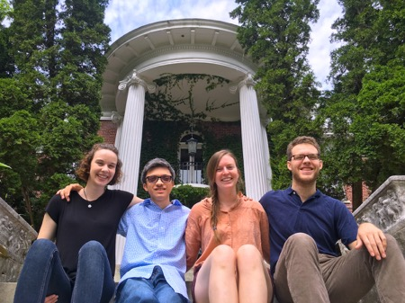
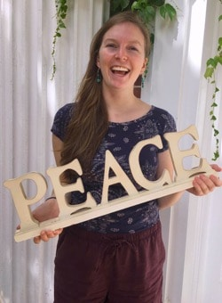
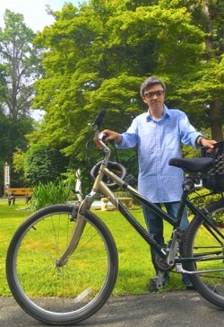

Introducing Our 2016 Intern Cohort!
Friends,
FOR is proud to introduce our Summer Intern Cohort! This group of bright and energetic young people will be living and working together at our headquarters in Nyack, NY.
Hannah Arndt, Archival Intern
Hello! I'm Hannah, I'm originally from the San Francisco Bay Area and am a rising senior at Vassar College where I study history and political science. I'm particularly interested in Middle Eastern and Ottoman history and spent the fall semester of my junior year studying in Istanbul, Turkey at Bogazici University. Upon hearing about an internship position where I could combine my love of the past, international peace and justice, and musty old boxes, I quickly jumped at the chance to work as an FOR archival intern for the summer of 2016. I am excited to be working at an organization that has so strongly focused on making peace the means as well as the ends, and am excited to be learning more about the efforts of those who have consistently sought alternatives to violence.
I have an enduring passion for avocados and dark chocolate, a great reverence for bodies of water, a consistent need to dance when music comes on, and a great fear of apathy. Carl Sagan once said, "If you wish to make an apple pie from scratch, you must first invent the universe" and I am particularly grateful to the creation of such a universe so that I am able to eat pies made from scratch.
Abigail Gibson, Communications Intern
Hey there! I am excited to join the FOR team, where I will be curating our blog, e-blasts, and social media posts. I graduated this May from Fordham University where I majored in Sociology and Communications and spent most of my time in a tiny blackbox theater doing comedy. My passion for service work was sparked through many summers doing volunteer home-repair in Appalachia, and that passion has guided my college experience as well as my goals for post-grad work.
I came to FOR by way of The Catholic Worker in New York City. I started volunteering at The Worker almost a year ago, and have made amazing connections to the community there and to my fellow volunteers. One such volunteer -- who has been involved with FOR since the '70s -- suggested that I look into this organization, and the rest is history!
Max Lee, Archival Communications Intern
"The past," as James Baldwin wrote, "is all that makes the present coherent." Here's my past, or rather the history of the places that I've lived and grown up in. In high school, I lived in a small, liberal suburb of Columbus, Ohio that, according to a family friend -- a black man and the grandson of slaves from the area -- didn't allow black people inside its borders after sunset during the 1960s. I then went to college in a place that accepted its first black student in 1832, only to force him to leave a few months later. Through these stories, I've comprehended how proximate I've always been to various injustices: the low enrollment of black students in my school in Ohio, social segregation in college.
As an archival communications intern, I'm doing two things. First, I'm working with Hannah, our archives intern, to file boxes of historical records, which FOR will be giving to the Swarthmore College Peace Collection near Philadelphia. Second, I'm writing blog posts archiving FOR's history and connecting them to the present. I want my work to get people who are viewing the blog or the Swarthmore College Peace Collection to understand the world around them -- in its horror and its beauty.
Jerry Monroe Maynard, Social Justice Intern
My name is Jerry. I am the Social Justice Intern for the Fellowship of Reconciliation this summer. In my current role with FOR, I try to bring my passion for justice and peace through engaged nonviolence, to the forefront of my work. As a devout Roman Catholic, who is discerning a call to Priesthood, my work in trying to live a wholehearted life through faith, love, and compassion, impacts my outlook on the world. I'm truly privileged to be able to share my passion for peacemaking, and faith with FOR and looking forward to any future collaborations down the line. Peace.
|

Bike donations
|
We need your help!
As Rev. Margaret Shepard once said, "Sometimes your only available transportation is a leap of faith." Unfortunately, right now this is true for some of us in the Peace House. While leaps of faith are brave and necessary, we would much prefer a faster mode of transportation -- bikes. We are looking for three bicycle donations for our lovely interns! If you, or anyone you know can help us out, respond to this email, or give Hope a call at 845-358-4601 x 32.
|
We all look forward to what this summer will bring, and hope to have a chance to meet some of you along the way!
Peace, Love, and Bicycles,
The 2016 Summer Interns
Fellowship of Reconciliation |